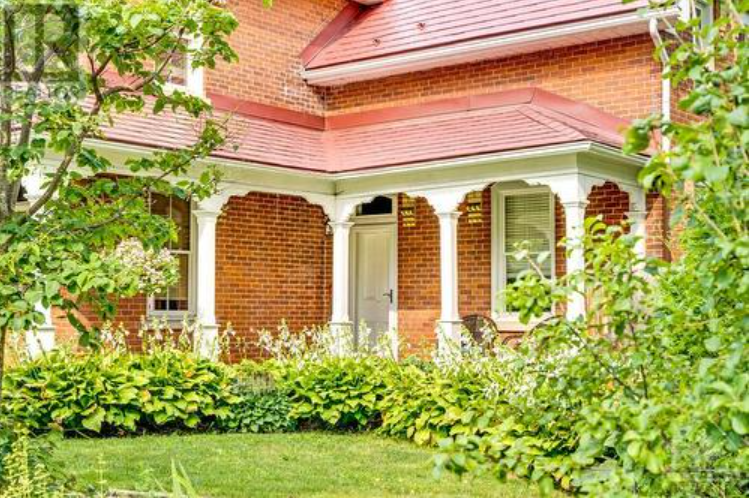
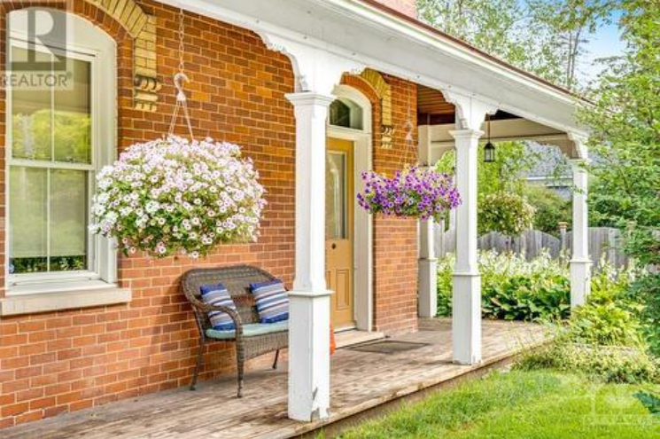
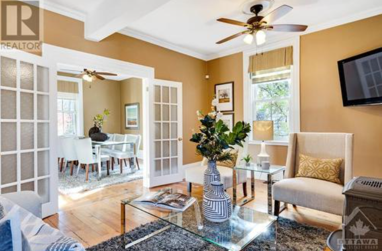
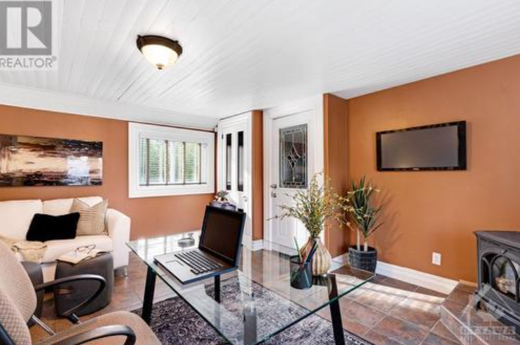

 
 
About The Home
$1,099,900 - 3 Beds - 2 Baths
In artisan town of Almonte, Victorian three-storey brick home on 1/2 acre lot with mature trees and perennial gardens. This 3bed, 2bath century home has historical charm, modern comforts and - a third storey loft. Enjoy the gracious gabled veranda. Then, step inside to beautifully cared for original wooden staircase, softwood floors, wide baseboards, crown moulding, high ceilings and back staircase. Elegant livingroom with Jotul gas fireplace stove and French doors to inviting diningroom. All style, kitchen granite counters, display cabinets and breakfast bar. Familyroom with accent brick wall, Jotul stove and garden doors. Upstairs, warmly welcoming primary and two other big bedrooms. Sparkling bathroom has glass shower-tub, slate floor and laundry station. Third floor, wonderful loft. Attached garage. Plus, detached garage for possible workshop. Lovely landscaped yard has patio, deck and gazebo. Underground lawn sprinklers. Walk to parks and Mississippi River. Lot severance possible.
- Square Feet: 5000
- Style: Detached
- Building Type: House
- Heating: Forced Air
- Cooling: Central Air